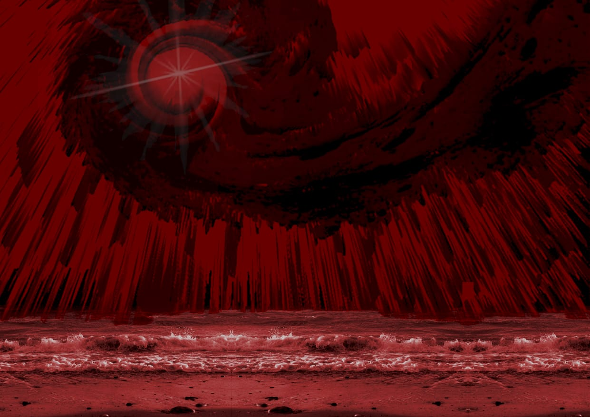

DESARROLO
"Confrontación como método de aprendizaje"
La académica Claudia Gómez Haro propone esta caracterización1: “La tesis es un género académico que se caracteriza por la identificación de un problema de conocimiento que se resuelve a través de la investigación y la argumentación lógica. En otras palabras, la tesis es algo más que un mero reporte de información y/o un conjunto de opiniones. La tesis es, en todo caso, un análisis crítico de la información, con el fin de explicar, de manera objetiva, rigurosa y documentada, un fenómeno determinado. En este sentido la tesis es un trabajo original que se interpreta, innova o genera conocimiento. Se trata, entonces, de una aportación a la disciplina correspondiente.”
Antítesis (filosofía)[editar] En filosofía, la antítesis es una contra-afirmación (negación) a una proposición (tesis) previa. Mediante la antítesis se puede proceder a una refutación. Las antítesis suelen ir encabezadas por expresiones como "pero", "sin embargo" o "por el contrario". En la dialéctica de Hegel y el idealismo alemán, la antítesis forma junto con la tesis una síntesis, aunque cabe aclarar que Hegel mismo no se sirvió de ninguno de esos términos.
Del lat. synthĕsis, y este del gr. σύνθεσις sýnthesis.
1. f. Composición de un todo por la reunión de sus partes.
2. f. Suma y compendio de una materia u otra cosa.
3. f. Quím. Proceso de obtención de un compuesto a partir de sustancias más sencillas.
Podemos relacionar lo siguiente
El limite de lo público y lo privado (externo e interno y viceversa) su elemento que lo separa y une, la piel o pieles responsivas.
trabajo práctico número 1 Objeto tridimensional complejo
El espacio tiempo (cronotopo) configura las variables del diseño en narrativas distintas, enlazadas de alguna manera en ese limite que las separa y une.
trabajo práctico número 2 Diseño de narrativas trasmedias
